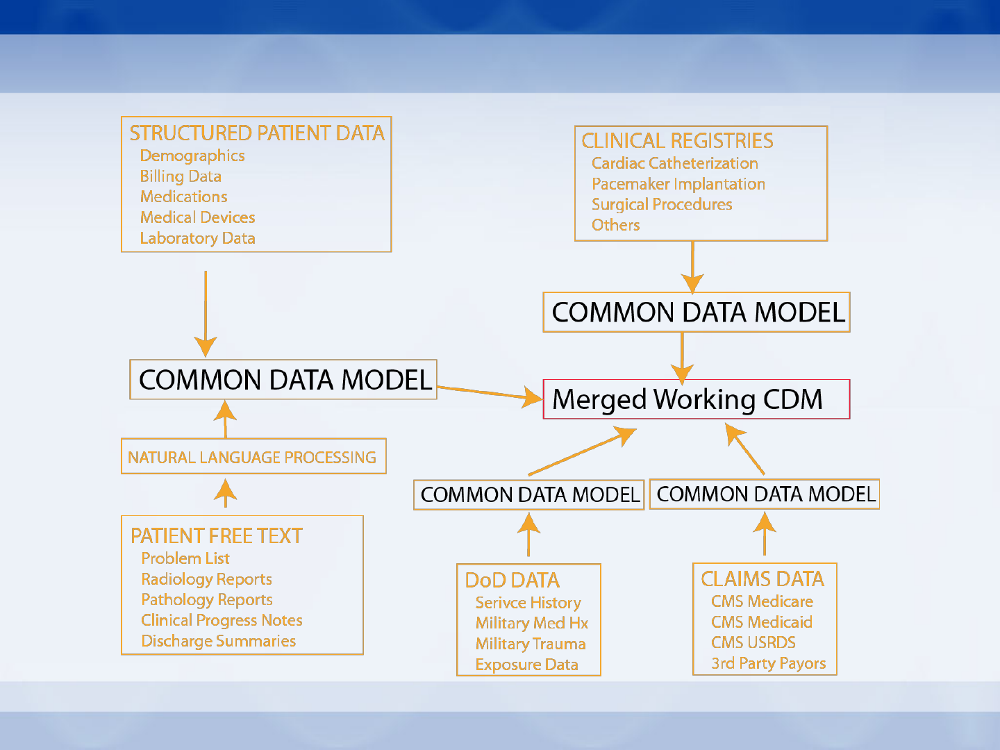

The VHA VINCI OMOP Experience
Michael E. Matheny, MD, MS, MPH
Associate Director, Data Analytics, VINCI
Associate Director, Advanced Fellowship in Medical Informatics
Tennessee Valley Healthcare System VA
Director, Center for Population Health Informatics
Departments of Biomedical Informatics, Medicine, and Biostatistics
Vanderbilt University
Twitter: @MichaelEMatheny
Email: michael.Matheny@va.gov, michael.Matheny@Vanderbilt.edu
Department of Veterans Affairs – U.S. Patient Coverage
•0.2-10% population coverage by state
•Unified EHR (CPRS/ViSTa) – with much site to site variation
•large numbers of data domains

VHA Infrastructure/Service Collaboration
•VHA Health Services Research & Development
Central Office
•VHA HSR&D VINCI Resource Center
•VHA Corporate Data Warehouse
•VA Office of Information & Technology
To deploy a data model for health system use, it takes an army…
Fern
FitzHenry
Michael
Matheny
Jason
Denton
Jesse
Brannen
ETL QA Help Desk/
Documentation
Daniel
Park
Liz
Hanchrow
Steve
Deppen
Guanhua
Chen
Amy
Perkins
Kristine
Lynch
Ben
Viernes
Ji Won
Chang
Scott
DuVall
Tools
Aize
Cao
Abby
Hillard
Brian
Sauer

Key Data & QA Partnerships
•Data Partners
–Department of Defense
–VIReC – VHA CMS Stewards
–VA CART CL – Cardiac Catheterization Registry
–Infectious Disease / Microbiology Research Group
–Medical Device / Prosthetics
–Natural Language Processing Researchers
•QA Partners
–Million Veterans Program
–Measurement Science QUERI Program
–e Health Management Platform EHR Development

HSR&D VINCI Strategic Roadmap
Contact
For more information contact:
michael.matheny@va.gov
michael.matheny@vanderbilt.edu

Integrating a multi-generational
multi-system clinical data
warehouse with OHDSI
Adler Perotte, MD, MA
Biomedical Informatics
Columbia University
Multi-system
Inpatient
system:
Hospital 1
Inpatient
system:
Hospital 2
Outpatient
system:
Hospital 1
Multi-generational
CIS
Standardization and Integration
Columbia University
Medical Entities Dictionary OHDSI Standard Vocabulary

Lessons Learned
•Data with history requires people with
historical knowledge
•The ETL process was a history lesson for those
of us who are newer to the institution
•Our research will benefit from a greater
understanding of our data
•A data model and a vocabulary are great, but
the tools truly open up the data
IMS Health
OHDSI Symposium 2016
Community Panel
Where are we on the Journey?
23-September-2016
14
Analytical Landscape
13m 12m 105m 48m 28m 11m 8m 1m 1m <1m 150m 96m
OMOP CDM
E360 platform
Predictive analytics
Commercial analytics Scientific analytics
P+ EMR EMR EMR EMR EMR Onc
EMR Non
-
IMS
Open
Claims HCDM Non
-
IMS
Non
-
IMS Privacy preservation & secure linkage
<1m
Non
-
IMS
Analytical Workbenches
R, SAS
15
16
"What's the adherence to my drug in the data assets I own?"
Current solution:
Current “One Study – One Script“ Approach
Japan
North America Southeast Asia China
Europe
Switzerland Italy
India
So Africa Israel
UK
Analytical method:
Adherence to Drug
Application to
data
One SAS or R script
for each study
•Not scalable
•Expensive
•Slow
•Prohibitive to
non-expert
routine use

17
Solution: OHDSI – Standardized Data and Analytics
1. E360
–Standard Cohorts
–Standardized Analytics
2. OMOP CDM
–Standardized Format
–Standardized Coding
North America Southeast Asia China
Europe UK Japan India
So Africa Switzerland Italy Israel
Mortality
Adherence
Safety
Signals
Source of Business
Standardized
data
18
OMOP Factory & Deployments
CSD Datasets
LRx Datasets (non-US)
EMR Claims
France
Italy
Spain
Belgium
Australia / New Zealand
Germany
UK
France
Italy
Switzerland
Netherlands
Belgium
Portugal
Australia
Japan
Korea
Spain
Hungary
Austria
Poland
Germany
DA Germany
DA France
Ambulatory EMR
THIN
US Onco EMR
Canada EMR
DA UK
HES UK
Hospital US
Canada Claims
Oncology Analyzer (mulit-country)
Corrona
PMSI
MMI
German DIAREG
OSCER
PharMetrics Plus
Hospital
Charges
Surveys
Open Claims
Ready
Underway
19
Impediments
IMS Health Confidential. For Discussion Purposes Only. Not Approved by Management
1. International Vocabularies
–Drugs > Procedures > Measurements > Conditions
2. Privacy Issues
–Date Shifting
–Encrypted patient and provider ID
–Privacy ICD9/10 Codes (death or sexual abuse)
–Death table
3. Legal Issues
–Data "stuck" in country
4. Maintenance rather than original ETL
© 2013 Evidera. All Rights Reserved.
The state of CDM Adoption, my perspectives:
Research vs Practice
Stephanie Reisinger
•OMOP Researcher
•Commercial OHDSI Vendor
The OHDSI Journey: Historical Perspective
Early CDM versions somewhat unsophisticated
–Broad assumptions applied at transformation time (remember eras??)
–Use of one master vocabulary: SNOMED
–Selection of patients and analysis done together (no Cohort Pickers!!!)
Over time evolved & expanded in approach and sophistication
–Signal detection signal refinement epidemiology
–Treatment patterns, resource utilization (including cost info in V5)
Organizational evolution
–OMOP Partnership Reagan Udall Foundation
–OHDSI Collaboration
oIndustry, academia, commercial, research organizations
oBroad swath of community members contributing to an open source repository
Historical focus has been on scientific research
–What is the best way to conduct observational research on large patient data sources?
–Significant progress in past 8 years!
21
Widespread Adoption of CDM has Faced Headwinds
Why?
–Multiple standards -- competing efforts and sometimes conflicting results
–Perception of (and potential for) data loss -- freeform text in EMR and patient
centered data sources
–(I think both of these will be addressed naturally as the CDM evolves)
And… we still haven’t definitively answered a key question:
–Is the expense and effort of implementing a CDM worth the value received?
22
Limited adoption to date
•Mainly developed and used by research organizations
•Growing acceptance within large pharma RWE, but still early days
How do we measure the value received from a CDM?
Measured differently depending on where you sit
–Research perspective:
oOHDSI has made HUGE progress in understanding the scientific value of a CDM
–Practice perspective:
oOHDSI Research hasn’t adequately addressed many issues encountered when
implementing a CDM in a production environment
23
Research Practice
Objectives
Research
into
CDM and associated
analytic methods
Use
of CDM for production evidence
generation
Organization
Loosely aligned organizations with
other business priorities
Resources and priorities
dedicated
to evidence generation
Infrastructure & Support
Reliance
on community members
for infrastructure and support
Dedicated infrastructure and reliable
support
are critical
Processes
& Workflow
Ad
-hoc, loosely aligned and
managed
across the community
Heavily regulated production
processes, workflows
much be
carefully managed
Differences in OHDSI Research vs Practice
Examples of CDM Practice Issues
What infrastructure do I need to support an OHDSI environment?
How do I integrate OHDSI modules into my existing workflows?
How will the data model be supported and extended going forward?
What if I find a bug or have a time sensitive question?
How do I hire and train the resources I need?
How much is all of this going to cost, and how much will it save me?
Etc.
24
Is the cost of implementing a CDM worth the value that
I’ll receive from doing it?
OHDSI Journey next chapter: Addressing Practice Issues
OHDSI: More activities to address “practice” questions
–Published, maintained development roadmap (where is the organization going)
–Research work streams focused on practice issues (e.g. more efficient ETL, workflow
process integration)
Industry: Support for critical “practice” components
–Explicit funding for activities critical to practice (e.g. regular vocabulary updates)
– Published case studies of successful “practice” best practices
Academia: OHDSI-specific education and training
–OHDSI data science (ETL, observational data transformation assumptions)
–OHDSI co-ops and fellowships
Vendors: Embrace the OMOP standard (coop-etition)
–Incorporate OMOP standard into commercial offerings and connect to other OMOP standard
offerings
– Provide “production support” for offerings
25
More widespread adoption is important to all of us. We
can better support this by focusing some of our collective
efforts into solving some of these critical practice issues.
President-elect (2016), Board of the Korean Society of Medical Informatics
(KOSMI)
Director, Professor, Department of Biomedical Informatics, Ajou University
School of Medicine
Rae Woong Park is the president-elect of board of the Korean Society of Medical
Informatics (KOSMI), and director and professor of the department of biomedical
informatics at Ajou University School of Medicine, South Korea.
He graduated Ajou University Medical School and received his Master of Science at the
same university, and he received his Ph.D. in the Department of Pathology, College of
Medicine Chungbuk National University, South Korea. He trained for surgical pathology at
the Ajou University Hospital.
He is interested in developing quantitative pharmacovigilance algorithms and drug
repositioning algorithms applicable to EHR data.
Dr Park is an active international collaborator of OHDSI. He had converted 22 years of EHR
data of the Ajou University Medical Center into CDM. He is now leading the Korean OHDSI
community and devoting himself to convert 6 largest Korean hospitals’ EHR data as well as
the Korean national health insurance claim data into CDM.
Rae Woong Park, MD, PhD

{kind=link}